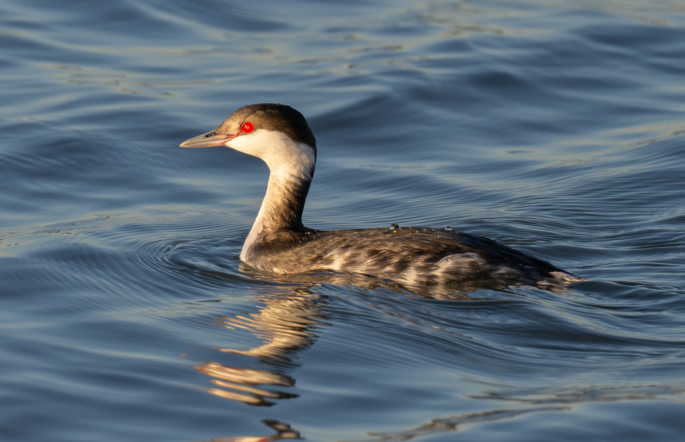
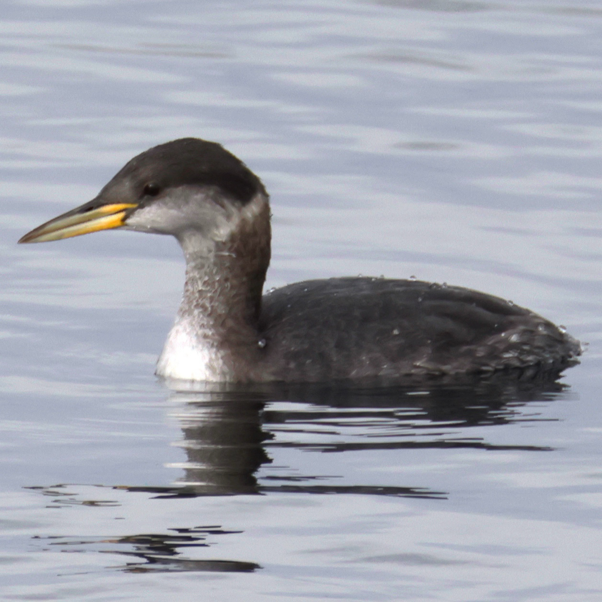
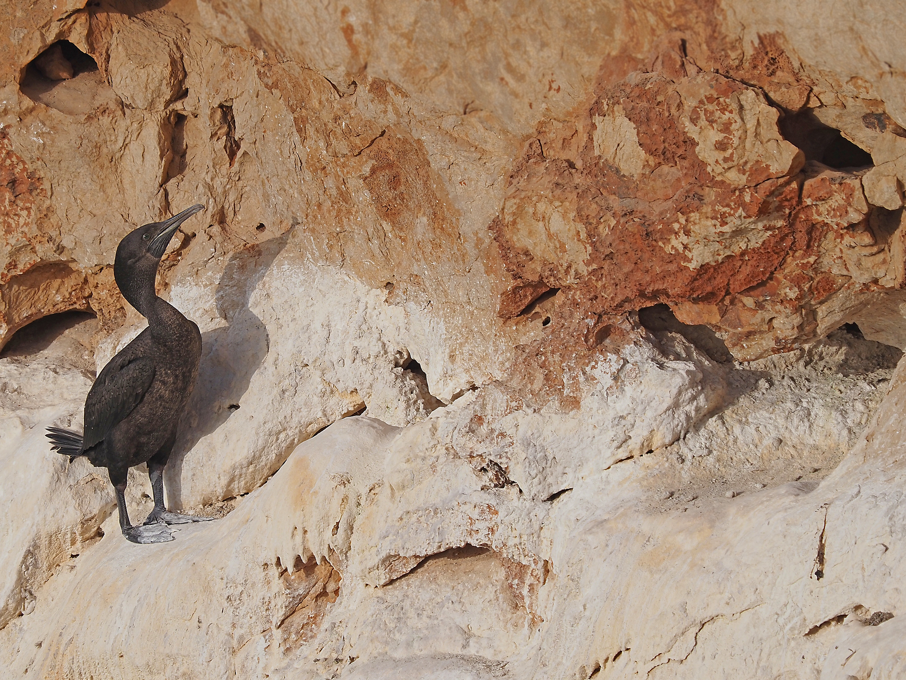
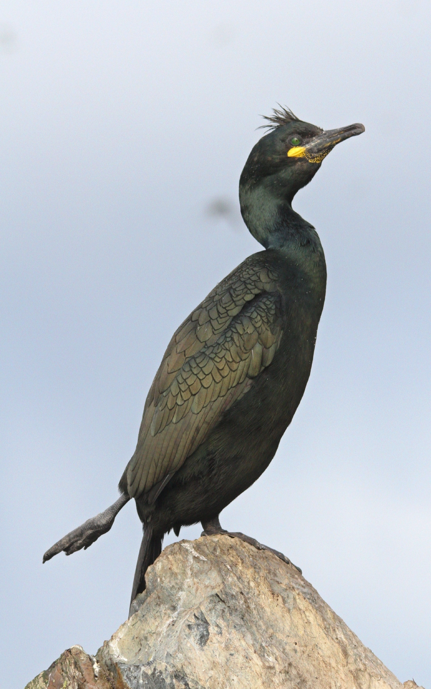
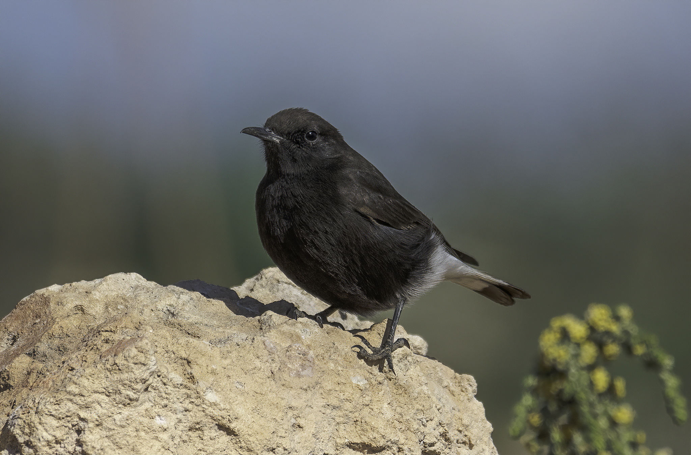
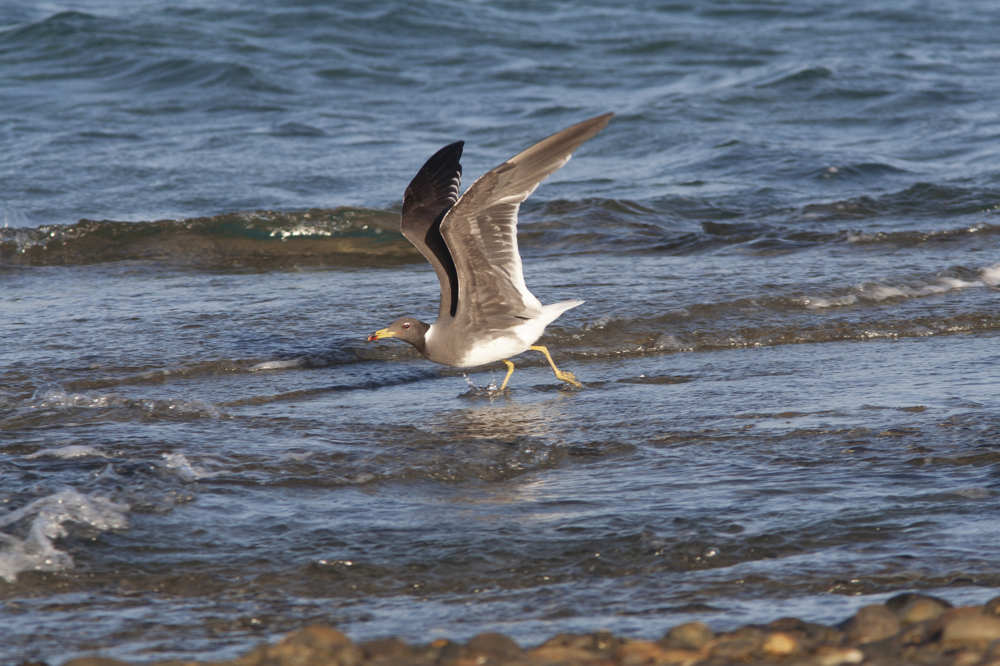
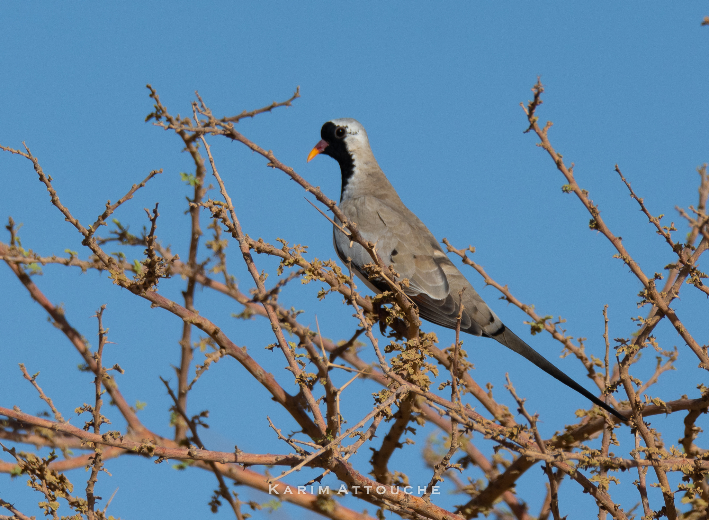
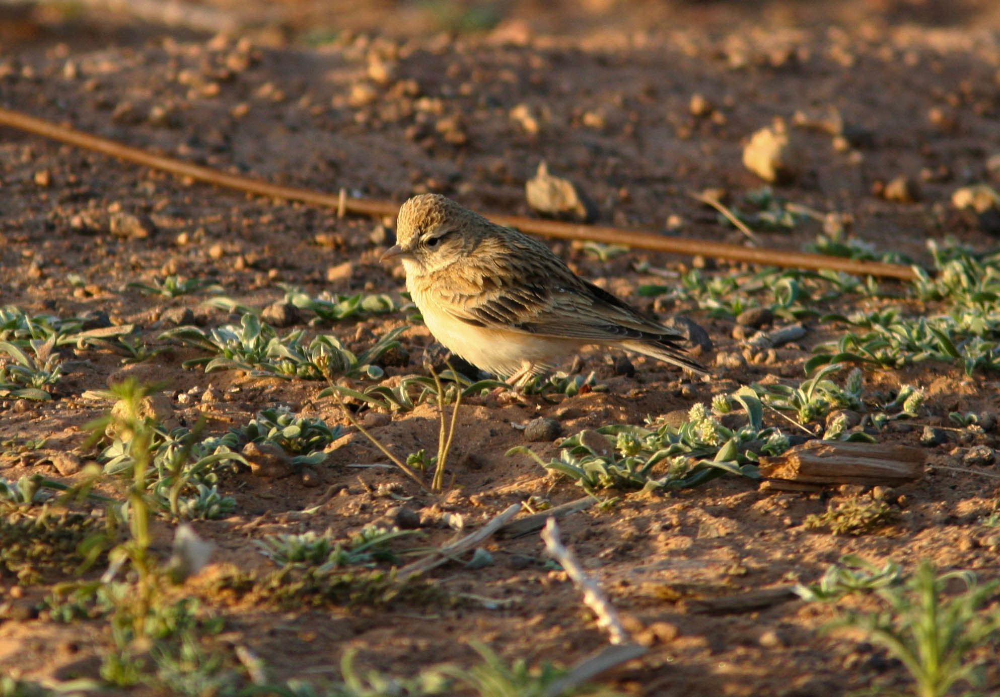
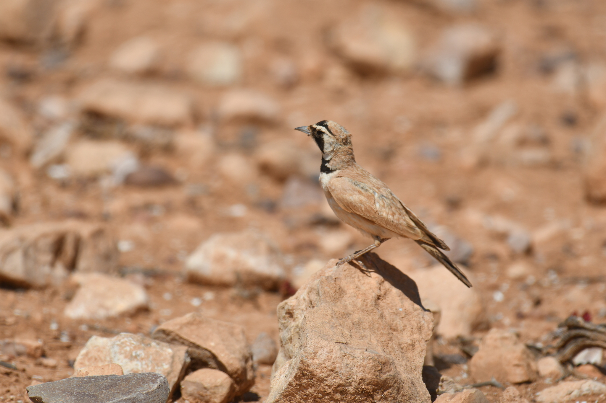
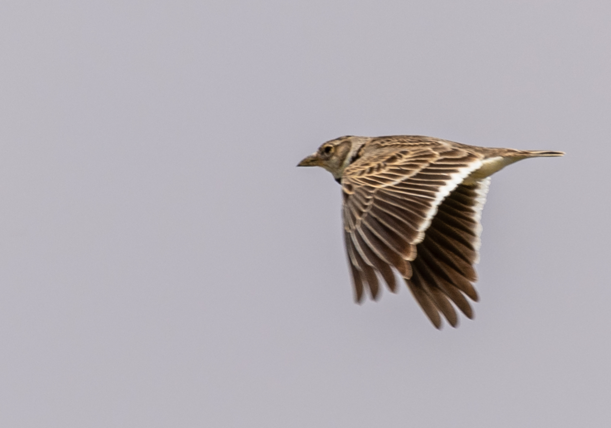

Grèbe esclavon
Podiceps auritus

Podiceps auritus

Podiceps grisegena

Phalacrocorax nigrogularis

Gulosus aristotelis

Oenanthe leucura

Oenanthe leucopyga

Dendrocopos syriacus

Sula leucogaster

Thalasseus bengalensis

Ichthyaetus hemprichii

Oena capensis

Calandrella brachydactyla

Eremophila bilopha

Melanocorypha calandra

Branta ruficollis

Branta bernicla

Anser erythropus

Marmaronetta angustirostris

Bucephala clangula

Oxyura leucocephala

Mergellus albellus

Mergus serrator

Aythya marila

Netta rufina

Cinclus cinclus

Prunella collaris

Emberiza cirlus

Lophophanes cristatus

Asio flammeus

Turdus iliacus

Columba oenas

Sitta neumayer

Emberiza citrinella

Strix aluco

Panurus biarmicus

Petronia petronia

Passer hispaniolensis

Passer montanus

Cyanistes teneriffae

Regulus ignicapilla

Cyanistes caeruleus

Emberiza cia

Tichodroma muraria

Sitta europaea

Anthus trivialis

Anthus cervinus

Calidris canutus

Calidris ferruginea

Pluvialis apricaria

Anarhynchus alexandrinus

Thinornis dubius

Sterna hirundo

Chlidonias hybrida

Spatula querquedula

Aquila heliaca

Clanga clanga

Circus macrourus

Circus cyaneus

Botaurus stellaris

Porzana porzana

Regulus regulus

Schoeniclus schoeniclus

Acrocephalus melanopogon

Cettia cetti

Lymnocryptes minimus

Anthus spinoletta

Gelochelidon nilotica

Hydroprogne caspia

Thalasseus sandvicensis

Chroicocephalus genei

Larus canus

Chroicocephalus ridibundus

Anser albifrons

Rallus aquaticus

Cecropis rufula

Sturnus unicolor

Ardea purpurea

Pycnonotus barbatus

Pycnonotus leucotis

Pycnonotus xanthopygos

Bubo ascalaphus

Gyps fulvus

Nannus troglodytes

Aquila nipalensis

Hieraaetus pennatus

Garrulus glandarius

Pandion haliaetus

Oenanthe isabellina

Milvus migrans

Tachymarptis melba

Apus pallidus

Apus apus

Riparia riparia

Delichon urbicum

Alaemon alaudipes

Ammomanes deserti

Oenanthe deserti

Ammoperdix heyi

Pterocles alchata

Pterocles orientalis

Columba livia

Merops cyanophrys

Coracias garrulus

Halcyon smyrnensis

Falco biarmicus

Buteo rufinus

Ciconia nigra

Alectoris barbara

Phoenicopterus roseus

Egretta gularis

Luscinia megarhynchos

Ardeola ralloides

Carduelis carduelis

Vanellus vanellus — Champs humides, passage automnal et visite hivernale

Podiceps nigricollis — un plongeur aux plumages saisonniers contrastés

Limosa lapponica — un limicole côtier au long cours

Tringa stagnatilis — un migrateur élancé des zones humides

Numenius phaeopus

Calidris alba

Arenaria interpres

Lullula arborea — La voix des lisières ouvertes et des pentes herbeuses

Prunella modularis — Un visiteur discret sous les buissons

Chloris chloris — Un granivore des vergers, lisières et jardins

Anthus pratensis — Un oiseau des espaces ouverts en migration et en hiver

Anser anser — Une grande oie sauvage à la présence régionale très inégale

Podiceps cristatus — Un plongeur des lacs, entre nidification locale et hivernage

Tadorna ferruginea — Des lacs de l’Atlas aux hivers levantins: pas seulement un visiteur

Charadrius hiaticula — Un petit limicole qui explore les rivages par courses et arrêts

Pluvialis squatarola — Un nicheur arctique relié aux estrans arabes

Tringa erythropus — du noir nuptial au gris hivernal

Tringa glareola — le migrateur des mares et prairies inondées

Calidris pugnax — bien au-delà de la collerette nuptiale

Numenius arquata — un grand limicole des rivages hivernaux

Plegadis falcinellus — un ibis des zones humides

Accipiter nisus — Un chasseur d’oiseaux agile alternant battements et glissades, dont la femelle dépasse nettement le mâle en taille

Buteo buteo — Un rapace aux ailes larges et au plumage variable, planant sur les espaces ouverts et migrant par le Levant

Le fringillidé des champs et des haies: nicheurs résidents et hivernants du Maroc au Levant

Aythya nyroca — Un canard châtain quasi menacé entre zones de reproduction arabes et lacs d’hiver

Un petit chanteur jaune des vergers: reconnaître le Serin cini, sa reproduction et son hivernage

Un visiteur hivernal au croupion blanc, des forêts boréales au Levant et au Maroc

Athene noctua — Une petite chouette résidente de divers milieux arabes, active la nuit et au crépuscule, parfois visible le jour

Un petit amateur de graines, migrateur automnal et hivernant variable dans le monde arabe

Tringa ochropus — Croupion blanc et ailes sombres: un visiteur des eaux arabes nichant dans les arbres du Nord

Calidris minuta — Un minuscule limicole entre toundra arctique et rivages arabes de passage et d’hiver

Upupa epops — Identification, habitats, reproduction et présence dans le monde arabe

Phoenicurus phoenicurus — Identification, habitats, reproduction et présence dans le monde arabe

Saxicola rubicola — Identification, habitats, reproduction et présence saisonnière dans le monde arabe

Motacilla cinerea — Identification, habitats, reproduction et présence dans le monde arabe

Saxicola rubetra — Identification, habitats, reproduction et présence dans le monde arabe

Motacilla flava — Identification, habitats, reproduction et présence saisonnière dans le monde arabe

Coloeus monedula — Identification, habitats, reproduction et présence saisonnière dans le monde arabe

Curruca melanocephala — Identification, habitats, reproduction et présence dans le monde arabe

Streptopelia decaocto — Identification, habitats, reproduction et présence dans le monde arabe

Parus major — Identification, habitats, reproduction et présence dans le monde arabe

Passer domesticus — Identification, habitats, reproduction et présence dans le monde arabe

Spilopelia senegalensis — Identification, habitats, reproduction et présence dans le monde arabe

Corvus cornix — Identification, habitats, reproduction et présence dans le monde arabe

Turdus merula — Identification, habitats, reproduction et présence dans le monde arabe

Fringilla coelebs — Identification, habitats, reproduction et présence dans le monde arabe

Sturnus vulgaris — Identification, habitats, reproduction et présence dans le monde arabe

Egretta garzetta — Identification, habitats, reproduction et présence dans le monde arabe

Ardea alba — Identification, habitats, reproduction et présence dans le monde arabe

Gallinula chloropus — Identification, habitats, reproduction et présence dans le monde arabe

Anas platyrhynchos — Identification, habitats, reproduction et présence dans le monde arabe

Mareca strepera — un canard de surface à tache alaire blanche

Aythya fuligula — un canard plongeur de passage et des eaux hivernales

Aythya ferina — un canard plongeur entre migration, hivernage et reproduction locale

Himantopus himantopus — un limicole aux longues pattes, sédentaire ou migrateur

Recurvirostra avosetta — un limicole à la fois migrateur et nicheur local dans les zones humides du monde arabe.

Limosa limosa — un limicole au long bec, entre migration et quartiers d’hiver

Son plumage passe du ventre noir estival au gris hivernal, tandis que ses déplacements relient les habitats de reproduction nordiques aux côtes de passage et d’hivernage.

Des pattes rouges et un large bord postérieur blanc à l’aile distinguent ce limicole présent dans de nombreuses zones humides arabes en migration et en hiver.

Des côtes aux mares intérieures, ce migrateur associe des pattes verdâtres à un bec légèrement retroussé.

Un petit oiseau transforme les épines en outils pour maintenir ses proies et conserver sa nourriture. Comment fait-il, et où l’observer dans les pays arabes ?

Identifier la Foulque macroule, ses âges et son cycle de vie, et comprendre sa présence dans le monde arabe entre résidence, reproduction, passage et hivernage.

Identification, migration et hivernage arabes, cycle de vie et périmètre taxonomique de la Sarcelle d’hiver.

Identification, cycle de vie et répartition saisonnière arabe du Grèbe castagneux: résidence, migration et reproduction distinguées.

Identification, cycle de vie et présence saisonnière du Canard souchet dans le monde arabe, entre hivernage et rares nidifications locales.

Reconnaître le Canard pilet, comprendre son cycle de vie et situer sa présence saisonnière documentée de la Tunisie et de l’Égypte à la péninsule Arabique.

Reconnaissance, alimentation et cycle de vie du Canard siffleur, avec présence saisonnière documentée dans le monde arabe et calendrier régional nuancé.

Queue fourchue, ailes pointues et vols au-dessus des champs et de l’eau : les populations et les saisons de l’Hirondelle rustique dans le monde arabe.

Un petit limicole au balancement caractéristique : identification, migration, hivernage et habitats, du Maghreb au Levant et à la péninsule Arabique.

Reconnaître le Traquet motteux et comprendre son passage, sa reproduction et sa présence hivernale au Maghreb, au Levant et dans la péninsule Arabique.

Des berges des rivières et des lacs aux champs et aux jardins, la Bergeronnette grise attire le regard par sa longue queue et ses mouvements incessants. Sa…

Du Maghreb à l’Égypte, au Levant et à la péninsule Arabique, le Pouillot véloce est présent en migration et en hivernage, avec une reproduction attestée…

Une queue rousse frémit au-dessus d’un rocher ou d’un vieux mur, puis l’oiseau vole brièvement vers le sol avant de regagner son perchoir. Ce mouvement peut…